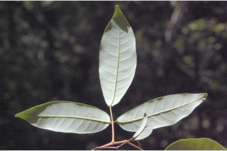
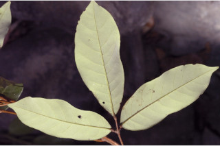
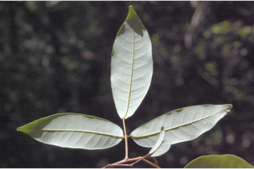
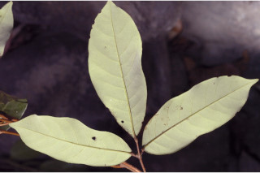

Trees up to 15 m tall.
15 ಮೀ. ಎತ್ತರದವರೆಗೆ ಬೆಳೆಯುವ ಮರಗಳು.
Trees up to 15 m tall.
மரங்கள் 15 மீ. உயரம் வரை வளரக்கூடியது.
Bark pale brown, shallowly fissured, lenticels rusty brown; blaze pink.
ತೊಗಟೆ ಮಸುಕಾದ ಕಂದು ಬಣ್ಣ ಹೊಂದಿದ್ದು,ಆಳವಿಲ್ಲದ ಸೀಳಿಕಾ ವಿನ್ಯಾಸದ್ದಾಗಿದ್ದು ತುಕ್ಕು ಬಣ್ಣದ ಸೂಕ್ಷ್ಮ ವಾಯುವಿನಿಮಯ ಬೆಂಡು ರಂಧ್ರಗಳ ಸಮೇತವಿರುತ್ತದೆ; ಕಚ್ಚು ಮಾಡಿದ ಜಾಗ ನಸುಗೆಂಪು.
Bark pale brown, shallowly fissured, lenticels rusty brown; blaze pink.
மரத்தின் பட்டை வெளிறிய ப்ரவுன் நிறமானது, தாழ்ந்த பிளவுகளுடையது, லெண்டிசெல் துரு ப்ரவுன் நிறமானது; உள்பட்டை பிங்க் நிறமானது.
Branchlets slender, terete, lenticellate, glabrous.
ಕಿರುಕೊಂಬೆಗಳು ತೆಳು ಹಾಗೂ ದುಂಡಾಗಿದ್ದು ಸೂಕ್ಷ್ಮ ವಾಯುವಿನಿಮಯ ಬೆಂಡು ರಂಧ್ರಗಳನ್ನು ಹೊಂದಿದ್ದು ರೋಮರಹಿತವಾಗಿರುತ್ತವೆ.
Branchlets slender, terete, lenticellate, glabrous.
சிறிய நுனிக்கிளைகள் மெல்லியது, குறுக்குவெட்டுத் தோற்றத்தில் வளையமானது, பட்டைத்துளைகள் (லெண்டிசெல்லேட்) உடையது, உரோமங்களற்றது.
Leaves compound, trifoliate, alternate, spiral; rachis up to 5 cm long, triangular, pulvinate, glabrous; petiolule of side leaflets 0.4-1 cm long and middle leaflet with 1.3-3 cm long, swollen at both ends, angled or subterete; lamina 4-15 x 2.5-5 cm, variable in shape, narrow oblong to elliptic or narrow obovate, apex acuminate with retuse tip or rounded with retuse, base acute to cuneate, margin entire, chartaceous to subcoriaceous, glaucous beneath; glabrous; midrib flat above; secondary_nerves 7-13, gradually curved; tertiary_nerves broadly reticulate, slender.
ಎಲೆಗಳು ಸಂಯುಕ್ತ ಮಾದರಿಯಲ್ಲಿದ್ದು ತ್ರಿಪರ್ಣಗಳನ್ನು ಹೊಂದಿದ್ದು ಪ್ರಯಾಯ ಸುತ್ತು ಜೋಡನಾ ವ್ಯವಸ್ಥೆಯಲ್ಲಿರುತ್ತವೆ; ನಡುಕಾಂಡ 5 ಸೆಂ.ಮೀ.ವರೆಗಿನ ಉದ್ದ ಹೊಂದಿದ್ದು ಉಬ್ಬಿದ ಲೆ ಬುಡದ ಸಮೇತವಿರುತ್ತದೆ ಮತ್ತು ರೋಮರಹಿತವಾಗಿರುತ್ತದೆ;ಪಾರ್ಶ್ವದಲ್ಲಿನ ಕಿರುಎಲೆಗಳ ತೊಟ್ಟುಗಳು 0.4 – 1 ಸೆಂ.ಮೀ. ಉದ್ದವಿದ್ದು ಮಧ್ಯದ ಕಿರುಎಲೆಗಳ ತೊಟ್ಟುಗಳು 1.3 – 3 ಸೆಂ.ಮೀ. ಉದ್ದ ಹೊಂದಿದ್ದು ಎರಡೂ ತುದಿಯಲ್ಲಿ ಉಬ್ಬಿರುತ್ತದೆ ಮತ್ತು ಕೋನಯುಕ್ತ ಅಥವಾ ಉಪ-ದುಂಡಾಗಿರುತ್ತದೆ; ಪತ್ರಗಳು 4 -15 X 2.5 -5 ಸೆಂ. ಮೀ.ವರೆಗಿನ ಗಾತ್ರ, ಆಕಾರದಲ್ಲಿ ವೈವಿಧ್ಯತೆ ಹೊಂದಿದ್ದು ಸಂಕುಚಿತ ಚತುರಸ್ರದಿಂದ ಅಂಡವೃತ್ತವರೆಗಿನ ಅಥವಾ ಸಂಕುಚಿತ ಬುಗುರಿಯ ಆಕಾರ, ಕ್ರಮೇಣ ಚೂಪಾಗುವ ಅಗ್ರದ ಮಧ್ಯದಲ್ಲಿ ತಗ್ಗುಳ್ಳ ತುದಿ ಅಥವಾ ದುಂಡನೆಯ ಅಗ್ರದಲ್ಲಿ ತಗ್ಗುಳ್ಳ ಮಾದರಿಯ ತುದಿ, ಚೂಪಾದ ಅಥವಾ ಬೆಣೆಯಾಕಾರದ ಬುಡ,ನಯವಾದ ಅಂಚು,ಕಾಗದವನ್ನೋಲುವ ಅಥವಾ ಉಪ-ಚರ್ಮದ ರೀತಿಯ ಮೇಲ್ಮೈ ,ಮಾಸಲು ಬೂದು ಹಸಿರು ಬಣ್ಣದ ತಳಭಾಗ ಹೊಂದಿರುತ್ತವೆ; ಪತ್ರಗಳು ರೋಮರಹಿತವಾಗಿರುತ್ತವೆ;ಮಧ್ಯನಾಳ ಪತ್ರದ ಮೇಲ್ಭಾಗದಲ್ಲಿ ಚಪ್ಪಟೆಯಾಗಿರುತ್ತದೆ;ಎರಡನೇ ದರ್ಜೆಯ ನಾಳಗಳು 7 ರಿಂದ 13 ಇದ್ದು ಕ್ರಮೇಣವಾಗಿ ಬಾಗಿರುತ್ತವೆ ;ಮೂರನೇ ದರ್ಜೆಯ ನಾಳಗಳು ವಿಶಾಲ ಜಾಲಬಂಧ ನಾಳ ವಿನ್ಯಾಸದಲ್ಲಿದ್ದು ತೆಳುವಾಗಿರುತ್ತವೆ.
Leaves compound, trifoliate, alternate, spiral; rachis up to 5 cm long, triangular, pulvinate, glabrous; petiolule of side leaflets 0.4-1 cm long and middle leaflet with 1.3-3 cm long, swollen at both ends, angled or subterete; lamina 4-15 x 2.5-5 cm, variable in shape, narrow oblong to elliptic or narrow obovate, apex acuminate with retuse tip or rounded with retuse, base acute to cuneate, margin entire, chartaceous to subcoriaceous, glaucous beneath; glabrous; midrib flat above; secondary_nerves 7-13, gradually curved; tertiary_nerves broadly reticulate, slender.
கூட்டிலை, மூவ்விலை கூட்டிலைகள், மாற்றுஅடுக்கமானவை, சுழல் போல் அமைந்தது; மத்தியகாம்பு 5 செ.மீ. நீளமானது, குறுக்குவெட்டுத் தோற்றத்தில் மூன்று கோணங்களுடையது, பல்வினேட், உரோமங்களற்றது; பக்கவாட்டிலுள்ள சிற்றிலையின் காம்பு 0.4-1 செ.மீ. நீளமானது மற்றும் நடுவிலுள்ள சிற்றிலையின் காம்பு 1.3-3 செ.மீ. நீளமானது, காம்பின் இருமுனைகளும் உப்பியது, குறுக்குவெட்டுத் தோற்றத்தில் மூன்று கோணங்களுடையது அல்லது குறுக்குவெட்டுத் தோற்றத்தில் வளையமானது; இலை அலகு 4-15 X 2.5-5 செ.மீ., வெவ்வேறு வடிவுடையது, குறுகிய நீள்சதுர வடிவானது முதல் நீள்வட்ட வடிவானது அல்லது குறுகிய தலைகீழ் முட்டை வடிவானது, அலகின் நுனி அதிக்கூரியதுடன் அதன் முனையில் சிறு பிளவுடையது (ரெட்யூஸ்) அல்லது வட்டமானதுடன் அதன் முனையில் சிறு பிளவுடையது (ரெட்யூஸ்) , அலகின் தளம் கூரியது முதல் ஆப்பு வடிவானது, அலகின் விளிம்பு முழுமையானது, சார்ட்டேசியஸ் முதல் சப்கோரியேசியஸ், அலகின் கீழ்பரப்பு மெழுகுபூசியது (க்களாக்கஸ்) போன்றது; உரோமங்களற்றது; மையநரம்பு மேற்பரப்பில் அலகின் பரப்பிற்கு சமமானது; இரண்டாம் நிலை நரம்புகள் 7-13, சீராக வளைந்தது; மூன்றாம் நிலை நரம்புகள் அகன்ற வலைப்பின்னல் போன்றவை, மெல்லியது.
Inflorescence terminal or axillary panicles; flowers greenish-yellow.
ಪುಷ್ಪಮಂಜರಿಗಳು ತುದಿಯಲ್ಲಿನ ಅಥವಾ ಅಕ್ಷಾಕಂಕುಳಿನಲ್ಲಿರುವ ಪುನರಾವೃತ್ತಿಯಾಗಿ ಕವಲೊಡೆಯುವ ಮಧ್ಯಾಭಿಸರ ಮಾದರಿಯವು;ಹೂಗಳು ಹಸಿರು ಮಿಶ್ರಿತ ಹಳದಿ ಬಣ್ಣ ಹೊಂದಿರುತ್ತವೆ.
Inflorescence terminal or axillary panicles; flowers greenish-yellow.
மஞ்சரி தண்டின் நுனியில் காணப்படும் அல்லது இலைக்கோணங்களில் காணப்படும் பேனிக்கிள்; மலர்கள் பச்சை-மஞ்சள் நிறமானவை.
Berry ovoid, to 1.3 cm long; seeds 1-2, pale brown, enclosed in a white fleshy aril.
ಬೆರ್ರಿಗಳು ಅಂಡಾಕಾರದಲ್ಲಿದ್ದು 1.3 ಸೆಂ.ಮೀ ವರೆಗಿನ ಉದ್ದವಿರುತ್ತವೆ;ಬೀಜಗಳು 1 – 2 ಇದ್ದು ಮಸುಕಾದ ಕಂದು ಬಣ್ಣ ಹೊಂದಿದ್ದು ಬಿಳಿ ಬಣ್ಣದ ಮಾಂಸಲವಾದ ಪತ್ರೆಯಲ್ಲಿ ಅಡಕವಾಗಿರುತ್ತವೆ.
Berry ovoid, to 1.3 cm long; seeds 1-2, pale brown, enclosed in a white fleshy aril.
முழுச்சதைகனி (பெர்ரி) முட்டைவடிவானது, முதல் 1.3 செ.மீ. நீளமானது; விதைகள் 1-2, வெளிறிய ப்ரவுன் நிறமானது, வெள்ளை நிறமான சதைப்பற்றான பத்ரி (ஏரில்) உடையது; விதைகள் 1-2.


 


